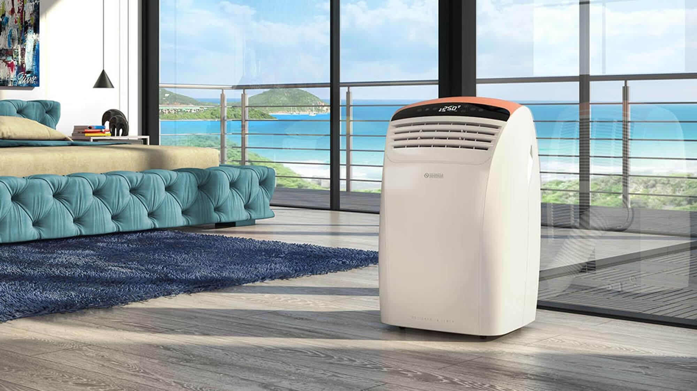

<!-- insert icon from iconSprite=========================--><!--======================================================--><!--insert img tag========================================--><!--======================================================--><!--======================================================--><!--======================================================--><!--======================================================--><!--======================================================--><!--======================================================--><!--======================================================--><!DOCTYPE html><html lang="ua"><head><title>S-Clima Продаж та обслуговування кліматичної техніки</title><meta charset="UTF-8"><meta name="viewport" content="width=device-width, user-scalable=no, initial-scale=1.0, maximum-scale=1.0, minimum-scale=1.0"><meta http-equiv="X-UA-Compatible" content="ie=edge"><link href="https://fonts.googleapis.com/icon?family=Material+Icons" rel="stylesheet"><link rel="stylesheet" href="css/style-vendors.min.css" type="text/css"><link rel="stylesheet" href="css/style.min.css" type="text/css"><link rel="apple-touch-icon" sizes="144x144" href="/img/favicons/apple-touch-icon.png">
<link rel="icon" type="image/png" sizes="32x32" href="/img/favicons/favicon-32x32.png">
<link rel="icon" type="image/png" sizes="16x16" href="/img/favicons/favicon-16x16.png">
<link rel="manifest" href="/img/favicons/site.webmanifest">
<link rel="shortcut icon" href="/img/favicons/favicon.ico">
<meta name="msapplication-TileColor" content="#da532c">
<meta name="msapplication-TileImage" content="/img/favicons/mstile-144x144.png">
<meta name="msapplication-config" content="/img/favicons/browserconfig.xml">
<meta name="theme-color" content="#ffffff"></head></html><body><div class="wrapper"><div class="modal" id="cart"><div class="cart"><div class="modal__container"><h4 class="cart__title title title_black">Кошик</h4><div class="cart__close modal-close"><svg class="svg-close-modal "><use xlink:href="img/icons/icons.svg#close-modal"/></svg></div><div class="cart__out"><div class="cart__content"></div></div><!--    goods container--><form class="cart__form" id="order-form"><div class="cart__inline"><div class="input-field"><i class="material-icons prefix">person</i><input type="text" name="cartOrderName" id="cart-order-name"><label for="cart-order-name">Ім'я</label></div><div class="input-field"><i class="material-icons prefix">phone</i><input type="text" name="cartOrderPhone" id="cart-order-phone"><label for="cart-order-phone">Контактний номер</label></div></div><div class="input-field"><i class="material-icons prefix">mode_edit</i><textarea class="materialize-textarea" name="cartOrderMessage" id="cart-order-text"></textarea><label for="cart-order-text">Коментар до замовлення</label></div><div class="cart__button"><button class="btn-main btn-main_min" type="submit">Оформити замовлення</button></div></form></div></div></div><header class="header-main" data-scroll-header><div class="header-main__container container"><div class="header-main__body"><a class="header-main__logo" href="#"><picture><source srcset="img/logo-min.webp" type="image/webp"></picture></a><div class="header-main__contacts"><svg class="svg-phone "><use xlink:href="img/icons/icons.svg#phone"/></svg><div class="header-main__phones"><a class="link link_2" href="tel:+380507777777">(050) 77-77-777</a><a class="link link_2" href="tel:+380507777777">(050) 77-77-777</a></div></div><div class="header-main__menu menu-main"><ul><li><a class="active" href="/">Головна</a></li><li><a href="#">Каталог</a><ul><li><a href="/condition.html">Кондиціонери</a></li><li><a href="#">Осушувачі/Очищувачі повітря</a></li><li><a href="#">Теплові завіси</a></li><li><a href="#">Теплові насоси</a></li><li><a href="#">Вентиляція</a></li></ul></li><li><a href="/works.html">Роботи</a></li><li><a href="/posts.html">Статті</a></li><li><a href="contacts.html">Контакти</a></li></ul></div><a class="header-main__cart modal-trigger" href="#cart" id="cart-main"><svg class="svg-cart "><use xlink:href="img/icons/icons.svg#cart"/></svg><span></span></a><div class="burger-menu"><span></span></div></div></div></header><section class="parallax-page parallax-container"><div class="parallax"><div class="parallax-page__body"><div class="parallax-page__nav-info anim-item anim-show-from-bottom anim-no-hide"><div class="parallax-page__container container"><div class="parallax-page__breadcumps breadcumps"><a href="#"><svg class="svg-home "><use xlink:href="img/icons/icons.svg#home"/></svg></a><span>/</span><a class="breadcumps__link" href="#">Статті</a><span>/</span><a class="breadcumps__link" href="#">Вентиляційні системи</a></div><h1 class="parallax-page__title title title_page">Вентиляційні системи</h1></div></div></div></div></section><section class="page"><div class="page__container container"><div class="page__row row"><div class="page__column column column-lg-1-4"><section class="post-aside anim-item anim-show-from-left anim-no-hide" data-da="single-post,last,992,max"><h4 class="post-aside__title">Останні статті</h4><div class="post-aside__row row"><div class="post-aside__column column column-sm-1-2"><div class="post-aside__arcticle article-post-aside"><div class="article-post-aside__date"><span>25 травня 2020</span></div><h6 class="article-post-aside__title">Як павильно підібрати осушувач повітря</h6><p class="article-post-aside__desc">Вид вентиляції напряму залежить від того, де саме її будуть встановлювати: чи це квартира, приватний будинок</p><a class="article-post-aside__link link" href="/single-post.html">Читати далі</a></div></div><div class="post-aside__column column column-sm-1-2"><div class="post-aside__arcticle article-post-aside"><div class="article-post-aside__date"><span>25 травня 2020</span></div><h6 class="article-post-aside__title">Як павильно підібрати осушувач повітря</h6><p class="article-post-aside__desc">Вид вентиляції напряму залежить від того, де саме її будуть встановлювати: чи це квартира, приватний будинок</p><a class="article-post-aside__link link" href="/single-post.html">Читати далі</a></div></div><div class="post-aside__column column column-sm-1-2"><div class="post-aside__arcticle article-post-aside"><div class="article-post-aside__date"><span>25 травня 2020</span></div><h6 class="article-post-aside__title">Як павильно підібрати осушувач повітря</h6><p class="article-post-aside__desc">Вид вентиляції напряму залежить від того, де саме її будуть встановлювати: чи це квартира, приватний будинок</p><a class="article-post-aside__link link" href="/single-post.html">Читати далі</a></div></div><div class="post-aside__column column column-sm-1-2"><div class="post-aside__arcticle article-post-aside"><div class="article-post-aside__date"><span>25 травня 2020</span></div><h6 class="article-post-aside__title">Як павильно підібрати осушувач повітря</h6><p class="article-post-aside__desc">Вид вентиляції напряму залежить від того, де саме її будуть встановлювати: чи це квартира, приватний будинок</p><a class="article-post-aside__link link" href="/single-post.html">Читати далі</a></div></div></div></section></div><div class="page__column column column-lg-3-4"><section class="single-post anim-item anim-show-from-right anim-no-hide"><p>Вентиляційні системи допомагають нам комфортно перебувати в приміщенні. Саме рівень комфорту залежить від якості та правильності встановлення вентиляції.</p><h2>Хороша вентиляційна система має декілька завдань:</h2><ol><li>Нормалізувати рівень вуглекислого газу, оскільки, він присутній завжди. А його надлишок чинить негативний вплив на організм. Тому завданням вентиляції  є безперервна циркуляція повітря.</li><li>Нормалізувати вологість повітря. Адже всім відомо, що надмірна вологість викликає безліч проблем, найпоширенішою, з яких є пліснява.</li><li>Фільтрація та очищення повітря знадвору. Особливо актуально в забруднених місцевостях.</li></ol><p>Вид вентиляції напряму залежить від того, де саме її будуть встановлювати: чи це квартира, приватний будинок, офіс, виробниче приміщення, тощо. Також важливим фактором є площа та кількість людей, які одночасно перебуватимуть в приміщенні та, навіть, планування.</p><p>Опираючись на всі фактори спеціаліст визначає, який вид вентиляції підходить саме під ваші потреби.</p><p></p><h2>Існує декілька видів вентиляції, які можна поділити за наступними параметрами:</h2><ol><li>За способом циркуляції повітря:<ul><li><strong>Природна</strong> — така вентиляційна система є в більшості житлових будинків. Цей вид не потребує примусової витяжки, обмін повітря здійснюється за допомогою перепаду тиску. Такий вид найчастіше зустрічається в старих будинках, де відсутня надмірна герметизація.</li><li><strong>Примусова або ж механічна</strong> — це система, при якій повітря безперервно поступає в приміщення. Повітря циркулює за допомогою спеціального обладнання.Таку вентиляцію ставлять в нових квартирах та будинках, де передбачено встановлення вентиляційного обладнання.</li></ul></li><li>За способом циркуляції повітря:<ul><li><strong>Приточна</strong> — забезпечує притік чистого повітря в приміщення знадвору.</li><li><strong>Витяжна</strong> — навпаки, забирає з приміщення забруднене повітря.</li><li><strong>Приточно-витяжнаяжна</strong> — поєднання двох систем, при якій одночасно здійснюється як притік повітря, так і відтік. Такі види вентиляції ідеально підходять для квартир та будинків понад 100 кв. м., офісних центрів, готелів та в місцях великого скупчення людей.</li></ul></li><li>За місцем дії:<ul><li><strong>Місцева або локальна</strong> — призначена для подачі свіжого повітря в конкретне місце або ж навпаки відведення забрудненого повітря з конкретної локальної зони. Такий вид вентиляції, зазвичай, застосовується на виробництві.</li><li><strong>Загальообмінна</strong> — на відміну від локальної, призначена для вентилювання всього приміщення.Також може бути як приточною, так і витяжною.</li></ul></li><li>З додатковими параметрами:<ul><li><strong>З клімат-контролем</strong> — вид обладнання, яке може підігрівати або охолоджувати повітря, залежно від температури надворі.</li><li><strong>З фільтрацією</strong> — очищує повітря, яке подає до приміщення.</li></ul></li></ol></section></div></div></div></section><footer class="footer"><div class="footer__background"><div class="footer__container container"><div class="footer__body"><div class="footer__info footer__block anim-item anim-show-from-bottom anim-no-hide"><div class="footer__logo"></div><div class="footer__desc"><p>Пропонуємо комплексний підхід до проєктування та встановлення систем вентиляції, кондиціонування та опалення для промислових та побутових об'єктів.</p></div></div><div class="footer__menu footer__block anim-item anim-show-from-bottom anim-show-from-bottom_2 anim-no-hide"><h4 class="footer__title title title_small">Навігація</h4><ul><li><a href="#">Промислові об'єкти</a></li><li><a href="#">Побутові об'єкти</a></li><li><a href="#">Готові роботи</a></li><li><a href="#">Статті</a></li><li><a href="#">Контакти</a></li></ul></div><div class="footer__catalog footer__block anim-item anim-show-from-bottom anim-show-from-bottom_3 anim-no-hide"><h4 class="footer__title title title_small">Каталог</h4><ul><li><a href="#">Кондиціонери</a></li><li><a href="#">ОСУШУВАЧІ / ОЧИЩУВАЧІ ПОВІТРЯ</a></li><li><a href="#">ТЕПЛОВІ ЗАВІСИ</a></li><li><a href="#">ТЕПЛОВІ НАСОСИ</a></li><li><a href="#">ВЕНТИЛЯЦІЯ</a></li></ul></div><div class="footer__contacts footer__block anim-item anim-show-from-bottom anim-show-from-bottom_4 anim-no-hide"><h4 class="footer__title title title_small">Контакти</h4><div class="footer__contacts-container"><svg class="svg-phone "><use xlink:href="img/icons/icons.svg#phone"/></svg><div class="footer__phones"><a class="link link_2" href="tel:+380677865345">(067) 77-77-777</a><a class="link link_2" href="tel:+380677865345">(067) 77-77-777</a></div></div><div class="footer__contacts-container"><svg class="svg-home "><use xlink:href="img/icons/icons.svg#home"/></svg><div class="footer__adress"><span> м. Івано-Франківськ, Мельничука 16Б, офіс 609</span></div></div><div class="footer__contacts-container"><svg class="svg-email "><use xlink:href="img/icons/icons.svg#email"/></svg><div class="footer__email"><a class="link link_2" href="mailto:sclima@gmail.com">sclima@gmail.com</a></div></div><div class="footer__contacts-container"><div class="footer__social"><a href="#"><svg class="svg-fb "><use xlink:href="img/icons/icons.svg#fb"/></svg></a><a href="#"><svg class="svg-insta "><use xlink:href="img/icons/icons.svg#insta"/></svg></a><a href="#"><svg class="svg-yt "><use xlink:href="img/icons/icons.svg#yt"/></svg></a></div></div></div></div></div><div class="footer__copyright copyright"><div class="footer__container container"><div class="copyright__container"><div class="copyright__main"></div><div class="copyright__develop"></div></div></div></div></div></footer></div><script src="js/vendors.js"></script><script src="js/app.min.js"></script></body>